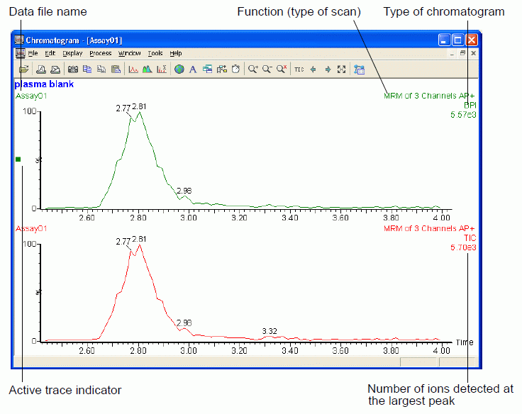

MassLynx Operation Guide
This is a somewhat summarized, somewhat detailed form of the user's manual provided by Waters-Micromass for the use of MassLynx for versions 4.0 and 4.1. All text is assumed to describe a feature or function of both versions and exceptions will be noted when a feature is missing or present.
The ProteinLyxn Global Server software setup and use of its interface has its own document.
The MassLynx software has been designed to be the single interface to the multiple products (mass spectrometers and chromatography systems) manufactured by Waters (formerly Waters-Micromass).
MassLynx has the following features:
Tune Pagewindow specialized for each mass spectrometer. This Tune Page is opened from the MassLynx main window in the Instrument toolbar via the MS Tune iconized button. The Tune Page software controls all physical elements of a device: settings of voltages, temperatures, and gas flows in mass spectrometers.
Inlet Methodwindow specialized for each chromatography system interfaced to a mass spectrometer. This Inlet Method is opened from the MassLynx main window in the Instrument toolbar via the MS Inlet iconized button. The system provides control over all device features of a chromatography system: initialization and preparation of an autosampler (valve position, washing syringe operation, temperature setting of vial cooling platform, position of vial platform) and pumps (flow rates, gradient operation) and column temperature.
For all mass spectrometers, the common output is the mass spectrum, a plot of ion count or intensity (relative or absolute) against a plot of the mass-to-charge value of the ion (intensity vs. m/z). So it makes sense that the presentation and analysis of this data in MassLynx is consistent. Chromatographic output is also a signal vs. time plot, so it too has a consistent interface. The signal might be absorbance data, but in an MS setup, it is usually total ion current (TIC).
MassLynx prepares sample lists with a similar interface (appearance), but since different mass spectrometers in the Waters/Micromass product line have different features, MassLynx has instrument-dependent features.
This tool is opened from the main window as a menu item on top of the Sample List panel.
When the window is opened with a data file, the collection of multiple mass spectra within a single run of an automated collection or manual acquisition is presented as a plot of a signal against either time or scan (a scan represents the period of time taken to accumulate ions and present them as a single spectrum).
The vertical axis part is the signal, and it important to understand what types of signals can be presented:
base peak.A BPI vs. time plot chromatogram only presents the ion count of the peak with the highest signal against time, ignoring the signals of other less intense peaks. This presentation might be used if there is only one component (the most intense) of interest; it has the greatest apparent resolution and signal-to-noise in a chromatogram, since it only looks at one component.
The figure below shows what the chromatogram window looks like. A single chromatogram data file is opened in both plots, but the top plot shows the BPI vs time plot while the bottom is a TIC vs. time plot.

The data file name is at the upper left above each plot (it is the same name in figure, indicating the same file). At the upper right of each plot in top-to-bottom presentation are:
This tool provides way of removing unwanted background and noise from data file. The result data is created as a new file similar to a processed RAW file. Four processing options are available:
Combines all functions in data file to produce a new result file containing a single function that is sum of the multiple functions. Combining of functions can only be done if the same scan range and rate were used, or the same SIR or MRM channels. Useful for files often having different cone voltages or collision energies.
[Needs entry]
[Needs entry]